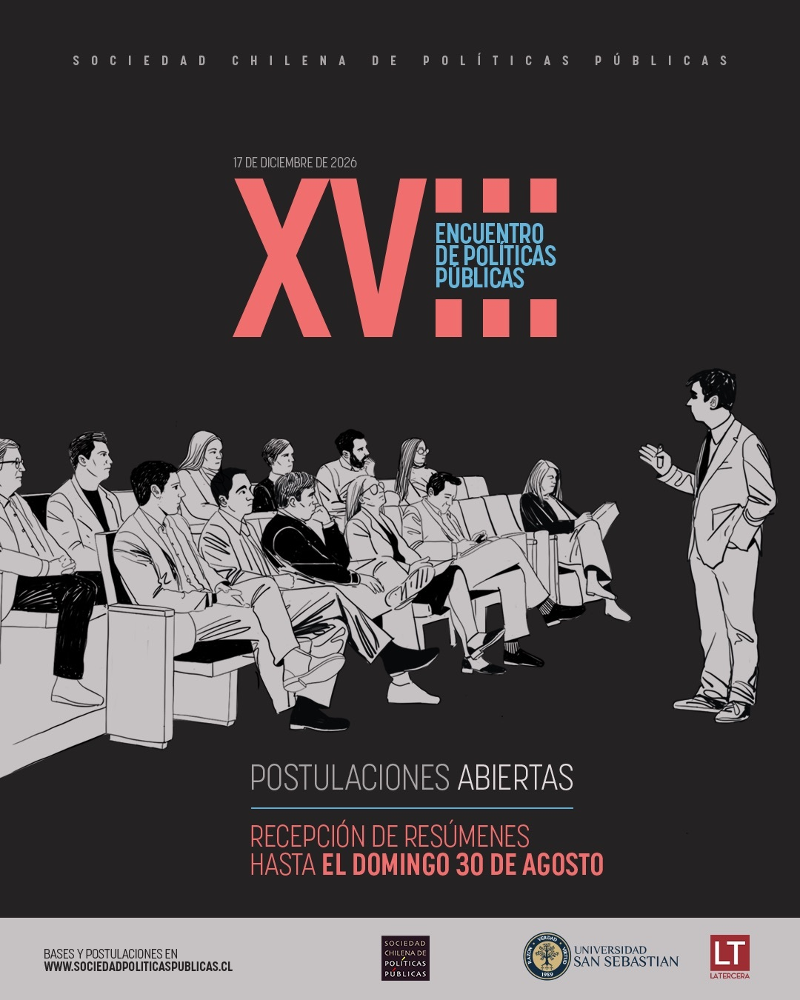

| Aspecto | Información |
|---|---|
| Convocatoria | Se reciben investigaciones académicas y trabajos aplicados a políticas públicas, siempre que cuenten con sustento académico. |
| Postulación | Hasta el 30 de agosto de 2026, 23:59 horas. |
| Áreas temáticas | El postulante puede seleccionar hasta 2 áreas, incluyendo educación, salud, pobreza y desigualdad, trabajo, migraciones, seguridad, medio ambiente, modernización del Estado, tecnología e inteligencia artificial, entre otras. |
| Resumen | Debe incluir antecedentes o delimitaciones, objetivos o propósitos, enfoque metodológico y resultados esperados o alcanzados, además de 3 a 5 palabras clave. |
| Evaluación inicial | Impacto potencial en políticas públicas (40%), consistencia y coherencia (20%), claridad del resumen (20%) y originalidad y aporte al conocimiento (20%). |
| Preselección | Comunicación de resultados a más tardar el 10 de septiembre de 2026. |
| Trabajo completo | Los trabajos preseleccionados deben enviarse hasta el 18 de octubre de 2026. Máximo 10.000 palabras, en español o inglés y en formato PDF. |
| Selección definitiva | Comunicación de resultados el 12 de noviembre de 2026. |
| Presentación | La presentación debe enviarse hasta el 10 de diciembre de 2026. Cada autor tendrá hasta 10 minutos para exponer. |
| Encuentro | 17 de diciembre de 2026. |